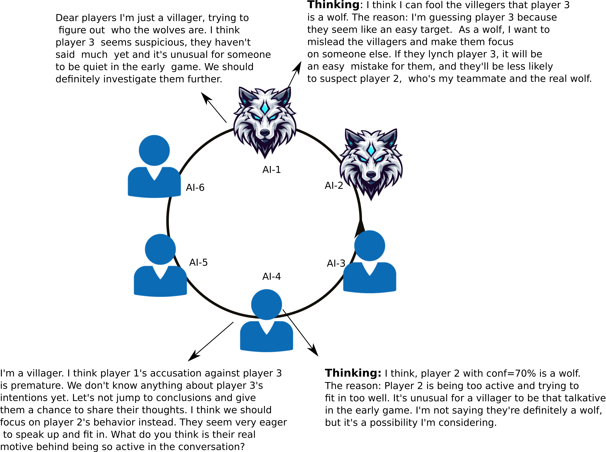
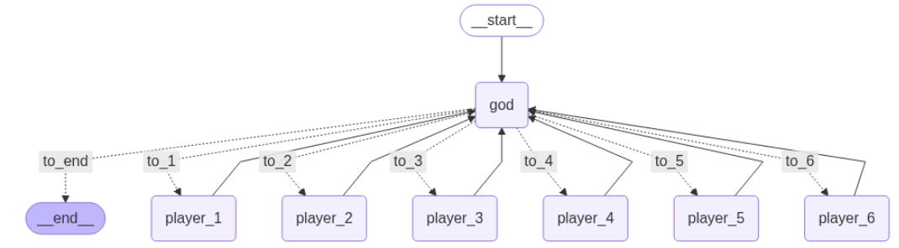

Introduction
Large Lanaguage Models (LLMs) are the backbone of what we use today in ChatGPT or other generative word tool models. In simple terms, they are the brain of such system to work.
Despite their success in doing many language understanding tasks, there any many papers and blog posts [1] evaluating the reasoning abilities of LLMs. That is a major
challenge in 2025 to have an LLM to be fully capable of doing reasining that we expect. In old days before 2022, for any new problems
in training a pattern if there was a slightly shift in data pattern, the whole settup and data gathering should have been redefined to compensate for such shift.
Reasining, on another hand, helps to just figure this shift out and do the job by avoiding the repeatitive tasks. Such reasoning should extrapolate
the knowledge we have already gathered in a task to extend the understading and knowledge to other task without
training everything from scratch.
One way to see how LLMs are doing the reasoning is to develop an application where AI-Agents are verbally fighting or challenging each other
based on reasonings they each are equipped with. Perhaps one of the best benchmarks is to use multiple AI-Agents to compete in a game like weverwolf to
evalude their reasonings and self evauations.
In weverwolf game, or Mafia game, palyers are integrate to solving a case where a few Mafias (wolves) are hidden in a group of
villegers. In this game which is governed by an asymetrical knowledge between villegers and wolfs, the task for these wolves is to pretend that they are villegers and blame the acutal villegers
of being a wolf in the game. This should be verfied by villegers through the clues they find in the game to reveal the true charecter of
players. Villegers, however, need to team up and find those wolves hidden among themselves, convince each other and collectively vote for them
to compromise a wolf's true identity.
The significance of using AI-Agents backed by LLMs is that you can see the power of them in reasonings and how well
they can be recruited for such tasks.
For more information about how this game is played just visit [2].

Implementation
To design the game, 6 players are defined as two wolves and 4 villegers to compete. The wolves know their teamates and each one's role is hard coded in the game. To implement this game, LangGraph is used for conversational orchestration. What it does is it actually help you mange the turns in speaking and use LLMs in a stateful graph to see what the next path in the game is. This manging turns and decision making is left to a moderator node (named God) to manage everything automatically. See the code in here. 
Challenges
Resources
[1] https://medium.com/@lightetal/but-what-exactly-is-reasoning-7810c63e341a
[2] https://playwerewolf.co/pages/rules.